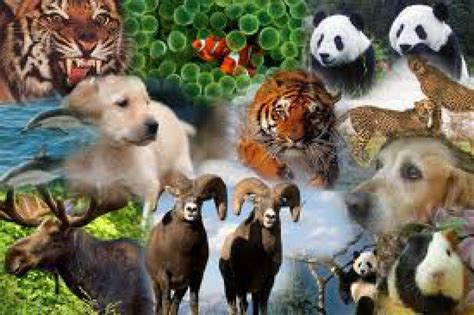
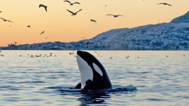

Las delfines, las vidas de estos simpáticos animales del agua aún son extremadamente desconocidas, tienen un comportamiento por lo regular amigable y juguetón hacia nosotros que sin duda ha ayudado a crear su reputación, sin embargo, existen pruebas de que podrían estar tan amartelados con nosotros cómo nosotros lo estamos con ellos.
En Australia, ha habido 23 reportes de delfines que llevan regalos como anguilas, calamares y pulpos muertos a humanos. No solo nosotros queremos interactuar con ellos, ellos quieren hacerlo con nosotros.
Leyendas náuticas cuentan de infinidad de ocasiones en las cuales delfines rescataron a humanos en el mar, pero ahora también hay pruebas de que los defínes ayudan a rescatar a otras especies.
Hace unos años dos cachalotes pigmeos (Kogia breviceps) perdieron su camino y terminaron varados en las playas de Nueva Zelanda. A pesar de todos los esfuerzos humanos para regresarlos al mar, los cachalotes permanecieron varados hasta que llegó un delfín conocido como Moko a ayudarlos.
Animales Marinos
Las personas que presenciaron el acto dijeron que la actitud de los cachalotes pigmeos cambió en cuanto llegó el delfín, pasaron de estar muy estresados a seguirlo de regreso a las profundidades.
3. Los Delfines Saben Que Tú Los Puedes Ayudar
Los delfines salvajes no sólo son inteligentes, también son sabios ya que saben cuándo y a quién deben pedir ayuda.
Cerca de Hawai un delfín se acercó a un grupo de buceadores ya que parecía no poder nadar bien. Los buceadores notaron que el delfín estaba enredado en una red para pesca y lo ayudaron a librarse de ella, el incidente fue grabado en vídeo. La cooperación delfín-humanos demuestra una apreciación mutua y una comprensión entre especies maravillosa.
ORCA
Las orcas se cuentan entre las especies más inteligentes que pueblan el planeta Tierra. Su cerebro es grande con respecto al tamaño de su cuerpo y poseen un neocórtex complejo. De acuerdo con Lori Marino, una experta en Neurociencia y Biología de la Universidad de Emory, si se pone a los delfines en una situación problemática, ellos la resolverán de la misma manera en la que los humanos lo hacen, muestra de que pueden realizar un verdadero trabajo mental.
El cerebro de las orcas es el segundo más grande del grupo de los mamíferos marinos, después del cachalote, con un peso de 6.8 kilogramos. Se ha descubierto que el cerebro de Orcinus orca contiene neuronas con forma de huso, del mismo modo que los seres humanos, los simios grandes, los elefantes y otros cetáceos. Al comparar la presencia de estas células esenciales en el desarrollo de la inteligencias en humanos y orcas, se infiere que éstas últimas tienen un nivel de inteligencia muy alto, algo que otros animales no poseen. Además, su corteza cerebral rivaliza en complejidad con la de los seres humanos.
La medición aproximada de la inteligencia de un animal se realiza por medio del cociente de encefalización (EQ, por sus siglas en inglés), el cual mide la masa del encéfalo con respecto a lo que se espera de su tamaño corporal. Los humanos y los cetáceos ocupan los primeros lugares de la lista de seres vivos con mayor cociente de encefalización y de hecho, la orca aparece en tercer lugar, con un cociente de 2.7-3.3.
Uno de los puntos frecuentemente recurridos para hacer hincapié en la inteligencia de los delfínidos es su cultura. Ésta suele considerarse exclusiva de los seres humanos, pero se ha descubierto que algunos delfines se protegen el hocico con esponjas al alimentarse y en el caso de las orcas, enseñan a sus crías cómo cazar mamíferos marinos justo en la orilla del mar. Una población puede diferenciarse de otra por su estructura social, sus vocalizaciones, su comportamiento y su alimentación, aspectos únicos que pueden considerarse una cultura en tanto son el conjunto de costumbres, modo de vida y nivel de desarrollo. Dentro de una manada puede ocurrir la imitación de las vocalizaciones de los miembros.
Hay que añadir que son animales eminentemente sociables y conforman una especie de “equipo” para resolver problemas. Por ejemplo, deben coordinarse muy bien al momento de cazar a sus presas, de este modo pueden obtener alimentos más grandes. Las orcas de Islandia cooperan con los pescadores: ellas indican el lugar exacto donde deben colocarse las redes y a cambio reciben una generosa porción de la captura.
Pero además de cazar juntas, interactúan unas con otras y establecen un comportamiento empático. En una ocasión una orca que pertenecía a una manada de la Patagonia argentina se encontró herida e imposibilitada para alimentarse, pero sus compañeras de mayor edad se encargaron de alimentarla y proveerle cuidados hasta que se recuperó favorablemente.
Hace un par de años un grupo de científicos manifestó que los delfines deberían ser tratados como personas mediante una Declaración de los Derechos de los Cetáceos, en vista de sus facultades de inteligencia. Aunque la inteligencia de las orcas no se ha visto tan encomiada como la de los delfines mulares (Tursiops truncatus), es claro que conforman una especie compleja, bella y tremendamente lista.